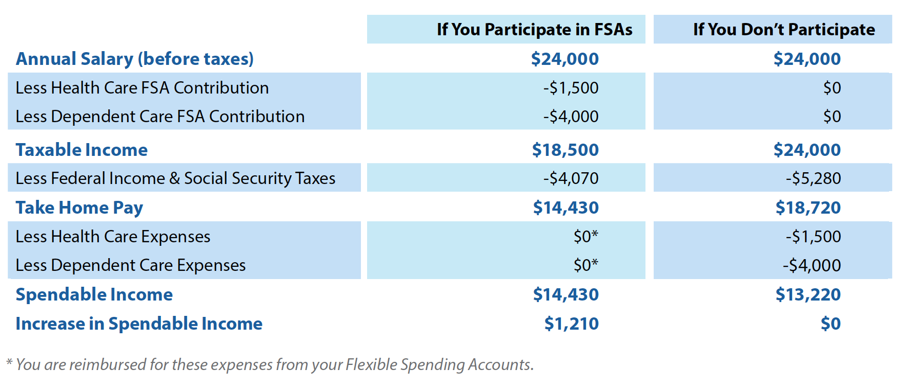

Flexible Spending Accounts
Inspira Health can help you create accounts to pay for eligible medical or daycare expenses. You fund Flexible Spending Accounts (FSAs) by setting aside part of your pay—before taxes—through payroll deduction. If you can estimate your expenses for the coming year, this can be a good way to save on your taxes each year.
How FSAs work
There are two kinds of FSAs:
- Health Care FSA
- Dependent Care FSA (daycare expenses)
Each pay period, your money accumulates in any FSAs you elect. You can use these FSA funds to pay for eligible expenses throughout the year using an FSA debit card, just like any other bank account. In the case of a Health Care FSA, you can use your funds at any time throughout the year; for a Dependent Care FSA, you may only use funds you have already set aside.
How much money should you put into an FSA each pay period?
That depends on your expenses. The best way to estimate your expenses for the year is by looking over the eligible expenses you incurred over the past few years. Divide your expected expenses by the number of pay periods in the year. Consider contributing this amount each pay period to an FSA. Estimate carefully: unused funds are lost at the end of the year. You have until June 15 to incur expenses using funds remaining in your FSAs from the previous year, and you can file for reimbursement for those expenses until June 30.
HSA Plan Enrollees: the Limited Use Medical FSA
Due to federal guidelines, participants in the HSA Plan are not eligible to enroll in both a traditional Health Care FSA and an HSA. However, enrollees in the HSA Plan may open a Limited Use Medical FSA (as well as a Dependent Care FSA).
Initially, you may use a Limited Use Medical FSA for eligible dental and vision care expenses only. Once you reach your deductible, you may use the FSA to cover medical expenses, as well. You must submit documentation that states your annual deductible has been met.
To participate in an FSA, you must renew your election before the start of each plan year (April 1).
FSA Reimbursement Deadlines
- You have until June 15 to use any FSA funds remaining from the previous year. Any money not spent will be lost.
- You have until June 30 to file for reimbursement from FSA funds from the previous year. After this date you may only be reimbursed from the current year's FSA funds.
FSA Tax Savings Example
By anticipating your family’s medical and dependent care costs, you can use FSAs to lower your taxable income. Your lower taxes translate to more spendable income. Here’s an example:
Estimate Your Annual Health Care Contirbutions
More Information (Click The Titles Below)
How It Works
Your Benny card makes using your FSA dollars easy. By using your card at eligible providers and merchants, you are immediately reimbursed for qualified health care and dependent care expenses.
Always Save Your Receipts
Save your receipts for eligible health care and dependent care expenses, even when using your Benny card. While pharmacies and other merchants can automatically verify many eligible purchases, health care providers usually cannot. For this reason, we recommend you keep receipts for all FSA transactions, including doctor’s office copays.
Helpful Hints
Please keep the following items in mind when using your Benny card:
- You can use your card to be reimbursed from your current FSA benefit during the Year-End Grace Period.
- Through www.myFlexDollars.com and the myFlexDollars Mobile App, you are provided with instant access to real-time account information.
- You keep the same debit card each plan year.
When not using your Benny Prepaid Benefits Card, you must submit a claim in order to be reimbursed for qualifying expenses.
- Submit a claim online at www.myFlexDollars.com.
- • Complete an FSA Reimbursement Claim Form and submit it to Baker Tilly Vantagen by fax at 1-866-406-0946, or by mail to 1200 Abington Executive Park, Clarks Summit, PA 18411.
You must include bills or receipts when you submit claims. The documentation you provide must include the following information at a minimum:
- The name of the provider or place where product was purchased;
- The service or product purchased;
- The date(s) the service or product was purchased;
- The Rx number for prescription drugs;
- The amount you paid out-of-pocket;
- The name of the person receiving the service or product; and
- The name, address, Social Security number or Tax ID number of any dependent care service provider (Dependent Care FSA claims only).
Canceled checks and/or credit card receipts cannot be used as documentation for these expenses. Claim forms are available at www.myFlexDollars.com, by calling 1-800-307-0230, or by visiting your local Human Resources Department.
Claim Payout Schedule
Claims are paid out on a weekly basis on Tuesdays for any claims submitted by noon on the previous Thursday. Claims received after this deadline will be processed on the following payout cycle.
Direct Deposit Option
To directly deposit claim reimbursements into your bank account, you can sign up for direct deposit online at www.myFlexDollars.com. You can also have reimbursements sent to directly to a provider when submitting a claim for reimbursement.
- Expenses incurred for hospital care.
- Physician’s fees, copays, coinsurance, and deductibles.
- Physician-prescribed over-the-counter drugs.
- Laboratory and clinical costs for services ordered by a physician, such as x-rays.
- Dental or orthodontic treatment.
- Vision care costs including eyeglasses or contact lenses and supplies, doctor’s fees, and LASIK/radial keratotomy surgery.
- Nursing care, such as boarding and lodging.
- Ambulance services and other travel-related costs for the purpose of obtaining necessary medical care.
- Medicines prescribed for a specific medical purpose, including insulin and birth control pills.
- Medically necessary supplies and equipment such as artificial limbs and teeth, crutches, wigs, wheelchairs, hearing aids, support hosiery, heating devices, orthopedic shoes, and abdominal or back support devices.
- Medically necessary therapies such as chiropractic, psychiatric, acupuncture, therapy sessions, hydrotherapy, physical therapy, diathermy, sterilization, vasectomy, whirlpool baths, and convalescent care.
- Well-baby care, including 50% of the expense for Lamaze classes relating to childbirth preparation.
- Seeing eye dog/cost of a guide incurred by blind persons.
- Alcoholics Anonymous expenses essential for mental health.
- Weight Watchers or smoking cessation expenses essential for health of heart disease patients.
- Costs of stays in mental health institutions.
- Expenses of kidney donor.
- Special school tuition for mentally/ physically handicapped children.
- Services provided: (a) inside or outside of your home by anyone other than your spouse, another one of your dependents or one of your children under 19 years of age, (b) by a child care center, or (c) by a housekeeper whose services include dependent care.
- Services provided by a dependent care center that meets local regulations, cares for more than six non-residents and receives a fee for such services, whether or not for-profit, but only if the care is for a dependent under age 13 or an eligible dependent who regularly spends at least eight hours a day in your home.
- Services provided outside of your home, such as day camp (if both parents work), preschool tuition or other outside dependent/child care services, such as before and after-school programs.
- Care for dependents who live with you at least eight hours a day and who are mentally and physically incapable of caring for themselves and who depend on you for over half of their support.
- Schooling costs for children not yet in kindergarten when they participate in an after-school daycare program at the same school (only the after-school program cost is reimbursable).
- Summer day camp (when both parents work).
- Expenses for a dependent daycare center (must meet all state and local licensing requirements).
©2018 Inspira Health Corporation All Rights Reserved